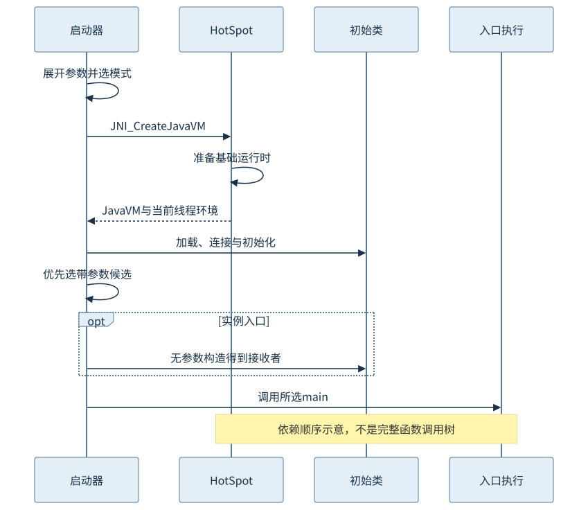
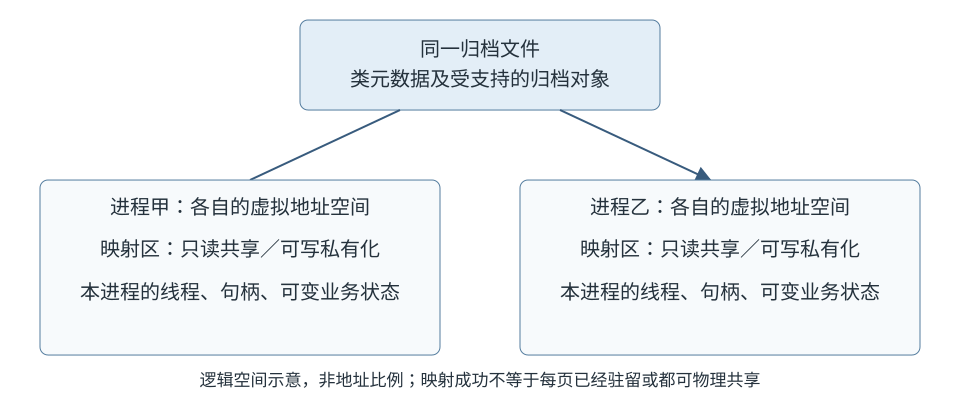

第七篇 · 启动、预热与本地互操作
第30章 虚拟机启动、退出与类数据共享
从命令到main，启动工作经历多个边界。归档可以复用已经处理的表示，但本进程的状态与退出责任仍要重新建立。
本章基于 Java 开发工具包（Java Development Kit，JDK）25.0.5.0.2 和 OpenJDK HotSpot，Java 虚拟机（Java Virtual Machine，JVM）实现锁定提交 1775ea114f64。规范、源码分析与本机有限观察分别说明。教学源码、运行说明和证据索引可相互定位。
30.1 启动器与运行时初始化
30.1.1 先分辨是谁消费这个选项
一条启动命令包含启动器负责的模式选择、送入虚拟机的选项和传给应用的参数。类路径、归档入口、模块入口与源码文件决定怎样寻找初始类；堆大小和统一日志决定运行时的配置。主类名称之后的字符串通常已经是应用参数，不能把放错位置的虚拟机选项当作已经生效。环境中的JDK_JAVA_OPTIONS还可能在显式命令之前加入启动配置；复现记录需要同时保存相关环境，而不只抄终端里的一行。
锁定实现的libjli/java.c从JLI_Launch进入参数处理，JavaMain再调用InitializeJVM。这里的“启动器”是本地程序，“虚拟机”是其装载并调用的运行时库。嵌入式宿主也可直接通过调用接口创建虚拟机，因此不能把java命令的全部语法都说成虚拟机规范规定。[S01、S03]
30.1.2 初始化是一组有依赖的工作
JNI_CreateJavaVM通向Threads::create_vm。参数、全局运行时设施、内存管理、初始JavaThread与核心类等必须满足后续工作的依赖，才能向启动器返回可用的调用环境。解释器、编译和收集子系统并非等进入用户main后才突然出现。也不应画一条“先加载全部类，再启动全部线程”的简单直线：初始化本身会创建线程、加载类并调用类库代码。
图30-1把需要理解的边界折叠为启动器、HotSpot、初始类与入口。它不承诺每一后台线程的具体启动次序。要研究某一耗时，先确定它属于进程装载、运行时初始化、初始类准备还是业务准备，再选择对应日志。第1章的贯穿程序只看见后面的用户阶段，不能覆盖前面的全部启动成本。

30.2 类加载与入口选择
30.2.1 四种入口形式有不同准备成本
| 启动形式 | 初始输入与准备 | 不能混同的事 |
|---|---|---|
| 类入口 | 类名及类路径；寻找已有类文件 | 类加载不等于一次性加载全部应用 |
| Java归档（Java Archive，JAR）入口 | 读取清单的Main-Class，按归档规则建立搜索路径 | -jar模式不沿用普通-cp覆盖主归档 |
| 模块入口 | 解析模块图并确定主类；显式模块与自动模块的身份不同 | 模块解析不等于业务类全部初始化 |
| 源码启动 | 编译源码并启动得到的初始类；本例还单独保留了常规编译产物 | 源码编译成本不应算成所有类入口的必然成本 |
CH30-E01分别以类、归档和自动模块形式运行；自动模块名称来自固定文件名startup.jar，不能据此声称已经观察了复杂显式模块图。CH30-E03同时保留紧凑源文件直接启动和编译后按类名启动。选择比较对象时必须统一所比较的阶段，尤其不要拿源码启动与预编译类入口的总时长推导归档映射收益。
30.2.2 25版候选入口优先看参数形态
Java语言规范25版12.1.4允许候选main是静态或实例方法，返回void，具有包、protected或public访问，形参是一个String数组或没有形参。先选带String数组的候选，再考虑无参数候选；这不是先挑static的规则。实例入口要求能按规定创建无参数实例，随后在该接收者上调用所选方法。类初始化、构造器执行与main调用是三个不同动作。[S02]
// 摘自CH30-E02；完整类还保留无参数main作为候选。
InstanceEntry() {
System.out.println("CH30 实例入口：先执行无参数构造器");
}
void main(String[] args) {
System.out.printf("CH30 选择带参数实例main：参数数=%d%n", args.length);
}
本轮实际先输出构造器，再输出带参数实例入口，传入chapter30时参数数为1。紧凑源文件不是脚本解释模式：javap显示它仍生成类、构造器和实例main。本特性在25版为正式能力，本例编译及启动没有开启预览。命令手册概述仍保留传统public static入口措辞时，应以对应语言规范的候选规则及锁定启动器分支来解释25版行为，不能删掉实际实例入口来迁就旧描述。
30.3 类数据共享的基础机制
30.3.1 共享的是可复用表示
类数据共享（Class Data Sharing，CDS）把部分已经处理的类表示放入归档，后续进程通过文件映射复用，从而减少重复解析和构造某些元数据的工作。锁定实现的FileMapInfo负责映射区域，MetaspaceShared协调加载及地址空间。归档可以包含受支持的堆对象，例如部分字符串或镜像相关数据；“只存类名列表”和“保存整个运行堆”都不准确。类列表是生成流程的一个输入，不等于最终归档内容。
文件映射既是复用表示的机制，也带来只读页共享的机会。但可写区域可能形成进程私有副本，页是否驻留取决于访问和系统缓存。映射日志显示地址范围，不显示两个进程究竟节省多少物理内存。因此本章不由“mapped”推导驻留内存减少的数值。[S03]

30.3.2 归档命中后仍有本次运行
线程、外部连接、应用对象图与可变业务状态属于当前进程；归档也不能把第一次运行的所有副作用重放成第二次运行已经发生。加载日志中的shared objects file说明该类表示来自共享文件，不表示main或静态初始化被跳过。CH30-E01的静态块在动态归档部署中仍打印“当前进程建立静态状态”，随后建立本次工作线程和关闭钩子。
第7章规定了初始化的触发及同步语义；共享表示不改变这些应用可见约束。类加载来源、是否提前连接、是否已经初始化和对象是否来自归档应分别提问。第31章会进一步转移连接与画像信息，仍须保留动态路径和当前进程状态的责任。
30.4 应用归档与兼容条件
30.4.1 静态生成与退出时增量生成
发行版通常提供默认基础归档。本章动态流程在正常应用运行时加载它，并用ArchiveClassesAtExit在退出时写入应用增量层；后续使用该增量文件时还依赖对应基础归档。静态应用流程则先收集已加载类列表，再用独立-Xshare:dump进程装配包含所需应用表示的归档。二者的生成时机、基础依赖与日志不同，不应把两个文件任意拼接。

# 在项目根目录；前提是README已编译并创建startup.jar。
/opt/homebrew/opt/openjdk@25/bin/java -Xmx64m -XX:ArchiveClassesAtExit=chapters/ch30-startup-sharing/target/startup.jsa -cp chapters/ch30-startup-sharing/target/startup.jar org.example.jvminternals.ch30.StartupJourney
本轮既有动态层的(top)命中，也有静态应用归档命中；共享关闭运行则显示来自startup.jar。静态装配警告跳过一个飞行记录事件类，是被保留的实际结果，不妨碍本示例应用类的共享命中。读日志时应逐类核对来源，不能仅凭生成进程返回成功就断言所有类都进入归档。
30.4.2 兼容性先于收益
归档不是可跨任意版本、架构、类路径和模块配置搬运的中间格式。目标运行时、应用字节、路径组织以及影响类定义的选项都属于匹配条件；模块补丁、代理变换等还可能限制优化。锁定filemap.cpp的验证路径会检查配置，CDSConfig也会处理不兼容选项。具体可组合规则应查25版手册及当前日志，不从一个小例子概括所有部署布局。
排查顺序应是确认使用了哪个文件、文件是否可读、日志是否成功映射、目标类是否命中，再调查未归档或不兼容原因。-Xshare:on适合诊断时明确要求共享可用；自动模式容许在某些失败条件下退回普通执行。共享关闭是本章的正常对照，未主动破坏归档或制造故障。文件缓存冷热没有控制，不能把单次入口uptime差异当作加速比例。
30.5 正常退出与异常终止
30.5.1 main返回不是全部线程退出
正常关闭可以由最后一个已启动非守护线程结束触发，也可以由显式退出请求启动。主方法返回只结束它的调用，并不自动杀掉其他非守护线程。StartupJourney让一个工作线程完成短任务后自行结束，本轮输出顺序为main返回、工作线程结束、关闭钩子标记；这是一次观察，不是依靠sleep建立的跨线程同步证明。
Shutdown.runHooks管理系统关闭步骤，ApplicationShutdownHooks启动应用登记的钩子并等待它们结束。系统内部槽位顺序不意味着不同应用钩子之间存在可依赖的先后。钩子应短而独立，避免互相等待或持锁要求其他钩子先完成。资源的常规所有权应在正常作用域内关闭，第12章的释放边界不能全部推迟给退出阶段。

30.5.2 关闭钩子不是最后的可靠事务
Runtime.halt请求立即停止，不执行通常的关闭序列；不可捕获的系统终止、掉电和运行时崩溃也不能保证钩子执行。普通未捕获异常通常先结束所属线程，是否导致整个进程关闭还取决于其他线程。不能把“异常”统一画成绕过钩子，更不能把所有系统信号都等同为不可捕获终止。[S04]
本章只运行自然结束，没有执行halt、强制终止或本地崩溃。持久性要求应由明确的写入、提交及恢复协议承担，而不是假定进程总有最后一次回调。向第八篇交接退出线索时，至少区分应用输出结束、关闭日志、系统退出状态与崩溃记录；缺少某个钩子标记本身不足以定位终止原因。
观察与边界
CH30-O01在macOS AArch64、64兆字节堆上完成正常启动、静态与动态归档流程；入口、归档、模块及源码模式各有独立输出。实际日志与命令见运行记录。
| 配置 | 应用类来源 | 当前进程行为 |
|---|---|---|
| 动态归档 | shared objects file (top) | 静态块、main、线程与钩子仍执行 |
| 静态应用归档 | shared objects file | 正常结束；装配跳过的事件类有警告 |
| -Xshare:off | startup.jar | 同样完成普通工作与正常关闭 |
未测系统缓存冷热、跨进程物理页共享比例或稳定业务性能；没有主动异常终止记录。这些边界不由编译、归档成功或页面可读代替。
回顾与思考
从启动命令到入口，应能指出谁选择启动模式、谁创建虚拟机、谁执行类初始化及构造器。看到共享命中时，再分别检查本进程仍需建立哪些状态。
- InstanceEntry同时具有两个候选main，为什么本轮调用带参数版本？
- 动态层依赖基础归档，为什么复制一个应用增量文件并不足以保证可用？
- main返回后仍有非守护线程时，资源关闭责任属于谁？
接续第31章：类表示可共享之后，继续观察连接结果和方法画像怎样跨次运行复用。
来源与实现入口
- S01：25版java命令，模式、共享归档与选项限制。
- S02：语言规范12.1.4，25版候选入口与实例创建。
- S03：锁定实现libjli/java.c的JLI_Launch、JavaMain、InitializeJVM；runtime/threads.cpp的Threads::create_vm；cds/filemap.cpp的FileMapInfo::map_regions及配置验证；见本章索引中的精确路径和提交链接。
- S04：Runtime契约及锁定java/lang/Shutdown.java、ApplicationShutdownHooks.java。